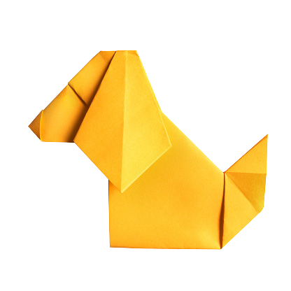
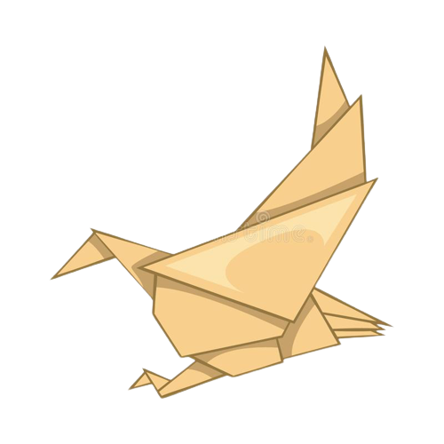
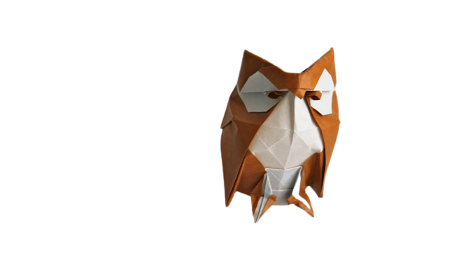

About Us
Follow Us
Oragami Designs
Click on the pictures to make the oragami animals
---------------------------------------------------------------------------

Interesting Facts about Dogs:
- Dogs can sniff our medical problems.
- Dogs sense of smell is 40 times better than humans.
- Some dogs are very fast and could beat a cheetah.
---------------------------------------------------------------------------

Interesting Facts about Eagles:
- Eagles are one of the top predators.
- Their eyes can take up 50% of their head.
- Eagles can be divided broadly into four groups: sea eagles, booted eagles, snake eagles and giant forest eagles.
---------------------------------------------------------------------------
Interesting Facts about Pandas:
- Pandas eat all the time. They never stop eating!
- Pandas are almost extinct.
---------------------------------------------------------------------------

Interesting Facts about Owls:
- Owls can turn their heads almost all the way around.
- Owls have super-powered hearing.
- Owls sometimes eat other owls.
---------------------------------------------------------------------------